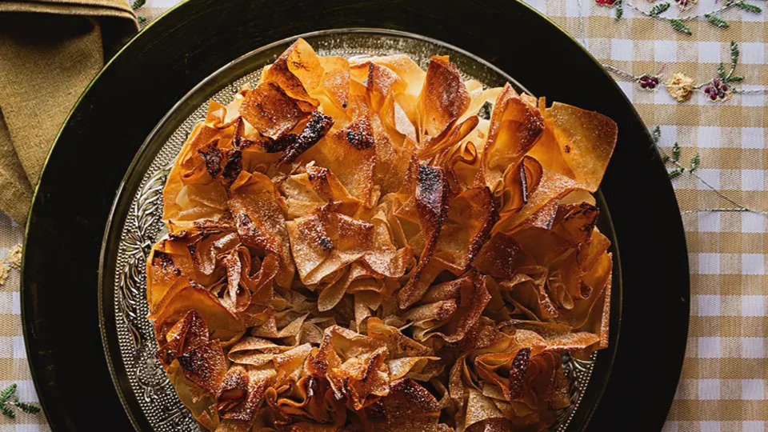
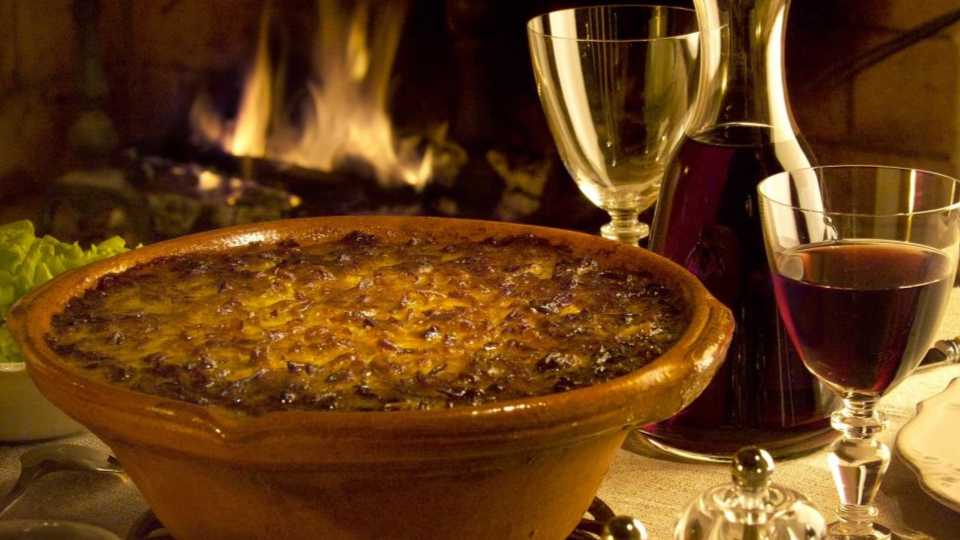
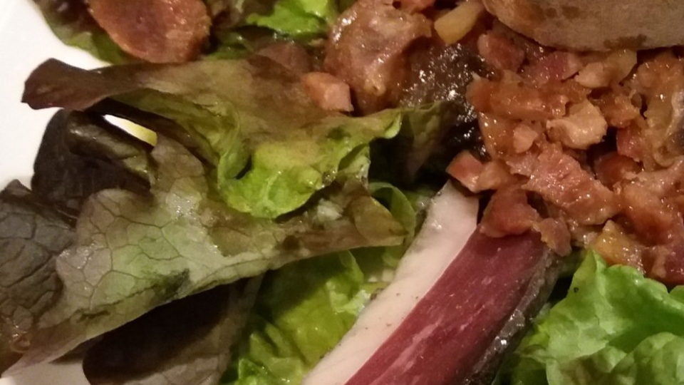

GourmeTech
Accueil
Ajouter une recette
Mes favoris
À propos
Rechercher
Catégorie
Entrée
Plat
Dessert
Temps de préparation
Rapide (< 30 min)
Moyen (30-60 min)
Long (> 60 min)
Difficulté
Facile
Moyenne
Difficile

Pastis gascon
Dessert
60 min
Moyen
Voir la recette

Cassoulet de Castelnaudary
Plat
120 min
Difficile
Voir la recette

Salade gerçoise
Entrée
30 min
facile
Voir la recette